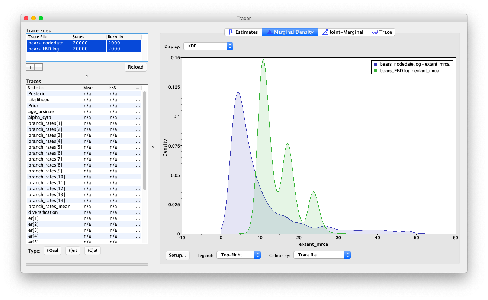

Exercise 4
In exercise 3 we inferred the phylogeny of extant bears and a timeline for their evolution using node dating. Node dating has several caveats, one which is that we hardly used any of the available fossil information.
In this exercise we will explictly incorporate information from the fossil record into the diversification process (i.e. the tree model). The fossilized birth-death (FBD) process is a model that assumes extant samples and fossils were generated by the same underlying evolutionary process (Stadler 2010; Heath et al. 2014). The model is an extension of the birth-death process that incorporates the fossil recovery process, meaning extinct samples are directly incorporated as part of the tree and may be sampled along internal branches. This is in contrast to node dating, where we only used information from the fossil record to constrain the node ages but the fossils were not assummed to be part of the tree. If a fossil falls directly along branch that has descendant samples in tree, it is referred to as a sampled ancestor.
The data we have available for the fossil bear species are stratigraphic ranges. This means that for each species we have dates for the first and last appearances, instead of fossil occurrence data. We will therefore use the fossilized birth-death range process (missing reference), rather than the original FBD model, which is more suitable for specimen level datasets.

For a more comprehensive description of these models check out the tutorials written by Tracy Heath, April Wright and Walker Pett.
- Combined-Evidence Analysis and the Fossilized Birth-Death Process for Stratigraphic Range Data
- Combined-Evidence Analysis and the Fossilized Birth-Death Process for Analysis of Fossil and Extant Specimens
The data
The sequence data used in this exercise remains the same as the previous exercises (bears_cytb.nex). We will also use the same substitution and clock models (the GTR + $\Gamma$ model and the uncorrelated exponential relaxed clock model).
In addition, we’ll take advantage of all the stratigraphic age information available for 20 species in bears_taxa.tsv, where max records the age of the first appearance (i.e. the oldest) and min records the age of the last appearance (i.e. the youngest) of the species. Time 0.0 represents the present and means the species is extant. We will use the fossilized birth-death process as our tree model, which allows us to directly incorporate fossils into the tree. Note that in this exercise, we will not be including any character for the 12 fossil taxa. This means that we cannot resolve the relationships of these taxa, however, the fossil sampling times are still informative about the FBD model parameters and divergence times.
There’s quite a few additional steps needed to set up this tree model.
The master Rev script
This time we will start by making some changes to the master Rev script.
Copy the master script from the previous exercise and call it MCMC_dating_ex4.Rev.
First, at the beginning of you script add the command to read the full list of taxon names from the bears_taxa.tsv file using the readTaxonData function.
taxa <- readTaxonData("data/bears_taxa.tsv")
This function reads a tab-delimited file and creates a variable called taxa that is a list of all of the taxon names relevant to this analysis, including the minimum/maximum ages.
Delete the helper variable taxa that we created earlier from the alignment using the command taxa <- cytb.taxa().
Add missing taxa
Remember that we only have molecular sequence data for the living species. Thus, we must add any taxa that are not found in the molecular (cytb) partition (i.e. are only found in the fossil data) to that data matrix as missing data (with “?” in place of all characters). In order for all the taxa to appear on the same tree, they all need to be part of the same dataset, as opposed to present in separate datasets. This ensures that there is a unified taxon set that contains all of our tips. We can do this using the cytb.addMissingTaxa function.
cytb.addMissingTaxa( taxa )
The tree model
Start by creating a copy of your tree_BD.Rev script, call it tree_FBD.Rev and open it in your text editor.
The fossilized birth-death process
The FBD model has some additional parameters we need to specify. In addition to speciation ($\lambda$), extinction ($\mu$) and extant species sampling ($\rho$), we need to specify the fossil recovery rate ($\psi$), plus the moves on this parameter. Include the following commands anywhere prior to specifying the timetree variable.
psi ~ dnExponential(10)
moves[mvi++] = mvScale(psi, lambda=0.5, tune=true, weight=1)
Next delete the command used to specify the root age extant_mrca.
We will condition the FBD process on the origin time ($\phi$), and specify a uniform distribution on this parameter, with a minimum equal to the oldest first appearance of bears (= 37.2 Ma) and a maximum equal to a prior estimate for the age of caniforms (= 49.0 Ma) that we used in the previous exercise.
Create a stochastic node for the origin time parameter.
origin_time ~ dnUnif(37.2, 49.0)
For this parameter, we will use a sliding window move (mvSlide). A sliding window samples a parameter uniformly within an interval (defined by the half-width delta). Sliding window moves can be tricky for small values, as the window may overlap zero. However, for parameters such as the origin age, there is little risk of this being an issue.
moves[mvi++] = mvSlide(origin_time, delta=1.0, tune=true, weight=5.0)
Note that the biological interpretation of this parameter is not that straightforward, so we can think of this as a nuisance parameter.
Next, we need to change the tree model distribution from the birth-death process to the FBD range process using the dnFBDRP command. Note that this function takes a different set of arguments to dnBDP.
tree_dist = dnFBDRP(lambda=speciation_rate, mu=extinction_rate, psi=psi, rho=rho, origin=origin_time, taxa=taxa)
Clade constraints
Again we’ll constrain the clade Ursinae to be monophyletic, but this time we have one fossil species to add this constraint: Ursus abstrusus. Add this taxon to your clade constraints before specifying the stochastic timetree node.
clade_ursinae = clade("Melursus_ursinus", "Ursus_arctos", "Ursus_maritimus",
"Helarctos_malayanus", "Ursus_americanus", "Ursus_thibetanus", "Ursus_abstrusus")
constraints = v(clade_ursinae)
Moves on the tree
In addition to the move we applied previously to sample the tree topology, mvFNPR, we also need to add an extra move mvCollapseExpandFossilBranch that will change a fossil that is a sampled ancestor so that it is on its own branch and vice versa.
moves[mvi++] = mvCollapseExpandFossilBranch(timetree, origin_time, weight=6.0)
In addition, when conditioning on the origin time, we also need to explicitly sample the root age (mvRootTimeSlideUniform).
moves[mvi++] = mvRootTimeSlideUniform(timetree, origin_time, weight=5.0)
Monitoring parameters of interest using deterministic nodes
We are still interested in the age of the MRCA of all living bears (extant_mrca). However, since now we have extinct species in our tree, the root of the tree may not represent the MRCA of all extant species. To monitor the age of this node in our MCMC sample, we must use the clade function to define the node. Importantly, since we did not include this clade in our constraints that defined timetree, this clade will not be constrained to be monophyletic. Once this clade is defined we can instantiate a deterministic node called extant_mrca with the tmrca function that will record the age of the MRCA of all living bears.
clade_extant = clade("Ailuropoda_melanoleuca","Tremarctos_ornatus","Melursus_ursinus",
"Ursus_arctos","Ursus_maritimus","Helarctos_malayanus",
"Ursus_americanus","Ursus_thibetanus")
extant_mrca := tmrca(timetree, clade_extant)
We can also create deterministic node to compute and keep track of the number of sampled ancestors (num_samp_anc) in our timetree.
num_samp_anc := timetree.numSampledAncestors()
Finally, we will monitor the tree after removing taxa for which we did not include any character data. The phylogenetic placement of these taxa is based only on their occurrence times and any clade constraints we applied. Because no data are available to resolve their relationships relative to other lineages, we will treat their placement as nuisance parameters and remove them from the output. Create a vector of extinct taxa and use the function fnPruneTree to create a deterministic node for the tree excluding extinct samples.
extinct_sp = v("Agriarctos_spp", "Ailurarctos_lufengensis", "Ballusia_elmensis",
"Indarctos_arctoides", "Indarctos_punjabiensis", "Indarctos_vireti",
"Kretzoiarctos_beatrix", "Parictis_montanus", "Ursavus_brevirhinus",
"Ursavus_primaevus", "Ursus_abstrusus", "Zaragocyon_daamsi")
pruned_tree := fnPruneTree(timetree, prune=extinct_sp)
Back to the master Rev script
As before, change the file used to specify the tree model from tree_BD_nodedate.Rev to tree_FBD.Rev.
source("scripts/tree_FBD.Rev")
Second, update the name of the output files. We also need to update the name of the tree we’re printing to file from the timetree variable that incorporates extinct taxa to the pruned_tree variable that includes our extant species only.
monitors[mni++] = mnModel(filename="output/bears_FBD.log", printgen=10)
monitors[mni++] = mnFile(filename="output/bears_FBD.trees", printgen=10, pruned_tree)
Don’t forget to update the commands used to generate the summary tree.
trace = readTreeTrace("output/bears_FBD.trees")
mccTree(trace, file="output/bears_FBD.mcc.tre" )
Run your MCMC analysis!
Examining the output
Let’s examine the output in Tracer and compare our results to those generated using node dating.
Open the program Tracer and load the log files bears_FBD.log and bears_nodedate.log.
Compare the node age estimates for the MRCA of extant bears. What do you notice about the different marginal densities?

You may also notice that the age recovered for age_ursinae is also a bit different but we need to be careful - the estimates obtained for this variable between the node dating and FBD analyses are not directly comparable. Recall that we added an additional fossil taxon to the Ursinae constraint in this analysis. What steps would you have taken to recover an equivalent parameter, without eliminating the clade_ursinae constraint?
The tree output
Have a quick look at your MCC tree in FigTree. How does it compare the tree your recovered using node dating?
Next
It’ll be more fun to examine the tree output once we infer the phylognetic position of extinct taxa and sampled ancestors, which we’ll do in the next exercise by incorporating morphological character data.
Click below to begin the next exercise!
For further options and information about the models used in this exercise see Tracy Heath, April Wright and Walker Pett’s tutorial Combined-Evidence Analysis and the Fossilized Birth-Death Process for Stratigraphic Range Data
- Heath T.A., Huelsenbeck J.P., Stadler T. 2014. The fossilized birth-death process for coherent calibration of divergence-time estimates. Proceedings of the National Academy of Sciences. 111:E2957–E2966. 10.1073/pnas.1319091111
- Höhna S., Heath T.A., Boussau B., Landis M.J., Ronquist F., Huelsenbeck J.P. 2014. Probabilistic Graphical Model Representation in Phylogenetics. Systematic Biology. 63:753–771. 10.1093/sysbio/syu039
- Stadler T. 2010. Sampling-through-time in birth-death trees. Journal of Theoretical Biology. 267:396–404. 10.1016/j.jtbi.2010.09.010